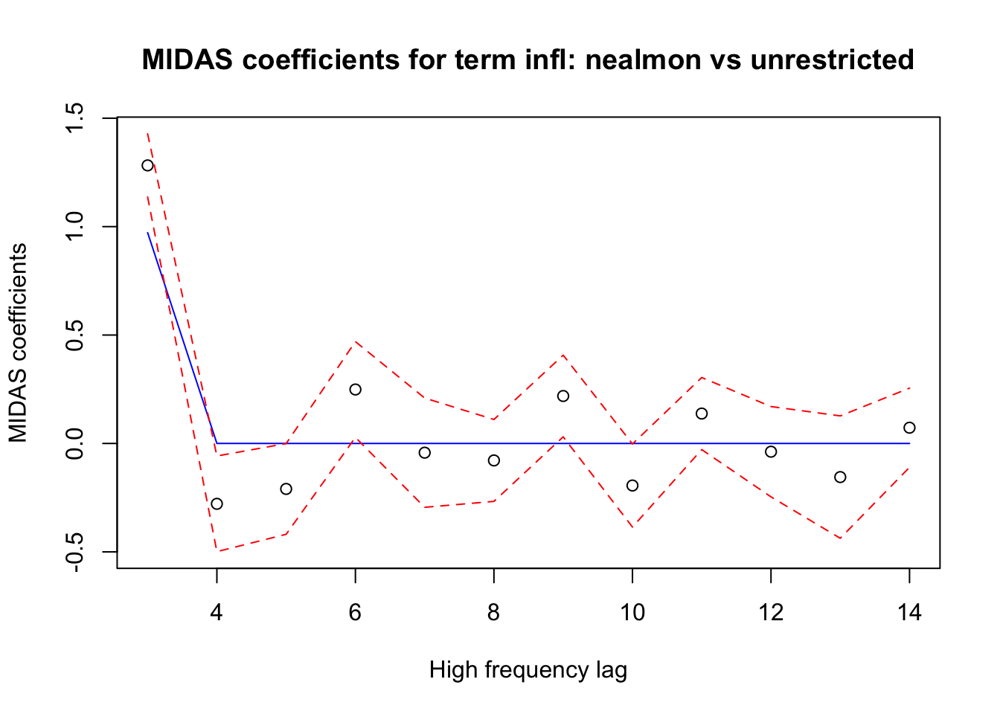

library(midasr)
library(quantmod)
library(lubridate)
usqgdp <- getSymbols("GDP",src="FRED",auto.assign=FALSE)
infl <- getSymbols("CPALTT01USM659N",src="FRED",auto.assign=FALSE)
usqgdp <- usqgdp["/2022-04-01",]
infl <- infl["/2022-06-01"]
gdpg <- diff(log(usqgdp))*100Reverse MIDAS with midasr
Introduction
This document presents example of fitting RU-MIDAS and RR-MIDAS models as described in Xu et al (2018) and Foroni et al (2018) using midasr R package. The source code for this document can be found in this repository.
The RU-MIDAS and RR-MIDAS models are used to forecast high frequency variable using low frequency variable. Suppose \(y_t\), \(t\in \mathbb{Z}\) is a univariate process observed at low frequency. Suppose \(x_\tau\), \(\tau=0,..,\) is a high frequency variable, i.e. for each low frequency period \(t=t_0\) we observe the variable \(x_\tau\) is observed at \(m\) high frequency periods: \(\tau = (t_0-1)m+1, ..., t_0m\).
The model specification is the following:
\[ x_{tm+h} = \mu+\sum_{j=0}^{p_Y}\mu_jy_{t-j}+\sum_{j=0}^{p_X}\beta_{j}x_{tm-j}+\varepsilon_{t} \]
Forecasting inflation using GDP growth
For demonstration we will use quarterly US GDP and monthly US inflation. We fix the end dates, so that this document would reproduce the same results when newer data points appear in future.
We are fitting a model which forecasts the inflation of the first month of the quarter using previous quarter GDP growth. The frequency aligning is done using function mlsd, which uses date information available from gdpg and infl. These two variables are xts objects.
In our case for the model specification we have \(h=1\), \(p_Y = 3\) and \(p_X = 8\). This means that we are using 3 previous quarters of GDP growth and 9 months of inflation data.
The package midasr uses convention that the low frequency variable is observed at the end of the low frequency period, so the high frequency values at the current low frequency period are always lagged. The first month of the quarter is then 2 high frequency lags “behind”.
All model specifications in midasr package assumes that the left hand side variable is observed at the low frequency period \(t\). For \(h=1\) the left hand side is observed at low frequency period \(t+1\), so to specify the model in midasr package we need to lag all the variables by one low frequency period, or 3 high frequency periods (one quarter is equal to 3 months).
Finally we arrive to the following specification:
mr <- midas_r(mlsd(infl,2,gdpg)~mlsd(gdpg, 1:3, gdpg)+mlsd(infl,3+0:8, gdpg), data=list(gdpg=gdpg, infl=infl), start = NULL)
mr
MIDAS regression model with "numeric" data:
Start = 56, End = 302
model: mlsd(infl, 2, gdpg) ~ mlsd(gdpg, 1:3, gdpg) + mlsd(infl, 3 + 0:8, gdpg)
(Intercept) gdpg1 gdpg2 gdpg3 infl1 infl2
-0.03919 0.02315 0.03041 0.06282 1.27659 -0.27883
infl3 infl4 infl5 infl6 infl7 infl8
-0.19871 0.22796 -0.02450 -0.09063 0.22257 -0.13683
infl9
-0.03304
Function lm was used for fittingLet us inspect what time series form the part of the model:
mr$model[nrow(mr$model)-(3:0), ] y (Intercept) mlsd(gdpg, 1:3, gdpg)X.1 mlsd(gdpg, 1:3, gdpg)X.2
300 5.365475 1 3.138917 2.576810
301 6.221869 1 2.008565 3.138917
302 7.479872 1 3.391781 2.008565
303 8.258629 1 1.586818 3.391781
mlsd(gdpg, 1:3, gdpg)X.3 mlsd(infl, 3 + 0:8, gdpg)X.3
300 1.591087 5.391451
301 2.576810 5.390349
302 3.138917 7.036403
303 2.008565 8.542456
mlsd(infl, 3 + 0:8, gdpg)X.4 mlsd(infl, 3 + 0:8, gdpg)X.5
300 4.992707 4.159695
301 5.251272 5.365475
302 6.809003 6.221869
303 7.871064 7.479872
mlsd(infl, 3 + 0:8, gdpg)X.6 mlsd(infl, 3 + 0:8, gdpg)X.7
300 2.619763 1.676215
301 5.391451 4.992707
302 5.390349 5.251272
303 7.036403 6.809003
mlsd(infl, 3 + 0:8, gdpg)X.8 mlsd(infl, 3 + 0:8, gdpg)X.9
300 1.399770 1.362005
301 4.159695 2.619763
302 5.365475 5.391451
303 6.221869 5.390349
mlsd(infl, 3 + 0:8, gdpg)X.10 mlsd(infl, 3 + 0:8, gdpg)X.11
300 1.174536 1.182066
301 1.676215 1.399770
302 4.992707 4.159695
303 5.251272 5.365475Let us inspect the last months of data
infl["2021-10-01/"] CPALTT01USM659N
2021-10-01 6.221869
2021-11-01 6.809003
2021-12-01 7.036403
2022-01-01 7.479872
2022-02-01 7.871064
2022-03-01 8.542456
2022-04-01 8.258629
2022-05-01 8.581512
2022-06-01 9.059758Compare it with the first column of the model matrix and you will see that the values in column y correspond to the values of first month of the quarter, namely the last row contains value for March of 2022, the previous value corresponds to January of 2022 and so on. These values are regressed against previous 12 months of inflation.
Here is the low frequency variable
gdpg["2021-01-01/"] GDP
2021-01-01 2.576810
2021-04-01 3.138917
2021-07-01 2.008565
2021-10-01 3.391781
2022-01-01 1.586818
2022-04-01 1.889125You can see that the values in the last row of the columns mlsd(gdpg, 1:3, gdpg)X.1 to mlsd(gdpg, 1:3, gdpg)X.3 correspond to yearly GDP growth for first quarter of 2022 and the last two quarters of 2021.
Let us inspect model we fit
summary(mr)
MIDAS regression model with "numeric" data:
Start = 56, End = 302
Formula mlsd(infl, 2, gdpg) ~ mlsd(gdpg, 1:3, gdpg) + mlsd(infl, 3 + 0:8, gdpg)
Parameters:
Estimate Std. Error t value Pr(>|t|)
(Intercept) -0.03919 0.04991 -0.785 0.43308
gdpg1 0.02315 0.01616 1.432 0.15338
gdpg2 0.03041 0.01727 1.761 0.07951 .
gdpg3 0.06282 0.01817 3.456 0.00065 ***
infl1 1.27659 0.07816 16.333 < 2e-16 ***
infl2 -0.27883 0.11661 -2.391 0.01759 *
infl3 -0.19871 0.11981 -1.658 0.09856 .
infl4 0.22796 0.11822 1.928 0.05502 .
infl5 -0.02450 0.13221 -0.185 0.85315
infl6 -0.09063 0.10396 -0.872 0.38424
infl7 0.22257 0.10415 2.137 0.03364 *
infl8 -0.13683 0.12482 -1.096 0.27411
infl9 -0.03304 0.06691 -0.494 0.62196
---
Signif. codes: 0 '***' 0.001 '**' 0.01 '*' 0.05 '.' 0.1 ' ' 1
Residual standard error: 0.352 on 234 degrees of freedomThe model suggests that the lags of GDP can be useful in forecasting the inflation.
We can try to impose some lag structure on the monthly data:
mr1 <- midas_r(mlsd(infl,2,gdpg)~mlsd(gdpg, 1:3, gdpg)+mlsd(infl,3+0:11, gdpg,nealmon), data=list(gdpg=gdpg, infl=infl), start = list(infl = c(0.1, 0.1)), method = "Nelder-Mead")
mr2 <- update(mr1, method = "BFGS")
mr2
MIDAS regression model with "numeric" data:
Start = 57, End = 302
model: mlsd(infl, 2, gdpg) ~ mlsd(gdpg, 1:3, gdpg) + mlsd(infl, 3 + 0:11, gdpg, nealmon)
(Intercept) gdpg1 gdpg2 gdpg3 infl1 infl2
-0.07238 0.01536 0.04268 0.06299 0.97211 -8.76726
Function optim was used for fittingLet us inspect the fit
summary(mr2)
MIDAS regression model with "numeric" data:
Start = 57, End = 302
Formula mlsd(infl, 2, gdpg) ~ mlsd(gdpg, 1:3, gdpg) + mlsd(infl, 3 + 0:11, gdpg, nealmon)
Parameters:
Estimate Std. Error t value Pr(>|t|)
(Intercept) -0.07238 0.05187 -1.395 0.1642
gdpg1 0.01536 0.01785 0.861 0.3904
gdpg2 0.04268 0.01729 2.469 0.0142 *
gdpg3 0.06299 0.02093 3.009 0.0029 **
infl1 0.97211 0.01146 84.844 <2e-16 ***
infl2 -8.76726 603.10547 -0.015 0.9884
---
Signif. codes: 0 '***' 0.001 '**' 0.01 '*' 0.05 '.' 0.1 ' ' 1
Residual standard error: 0.3758 on 240 degrees of freedomThe fit is slightly worse because the restriction is not very good. As can be seen from the coefficients:
plot_midas_coef(mr2)
Frequency aliging with mls
We can align frequencies manually. For that we need to align the start and beginning of the times series and padd high frequency data with NAs. The inflation data ends at June, 2022. The gdp data ends at second quarter of 2022. So in this case we have a full quarter of the high frequency data, which means that no padding is necessary.
infl1 <- infl["1960-01-01/2022-06-01"]
gdpgp1 <- gdpg["1960-01-01/2022-04-01"]
infl2 <- ts(c(as.numeric(infl1)), start=c(1960,1), frequency = 12)
gdpg2 <- ts(as.numeric(gdpgp1), start=c(1960,1), frequency = 4)Let us fit the same model with aligned data.
mra <- midas_r(mls(infl,2,3)~mls(gdpg, 1:3, 1)+mls(infl,3+0:11, 3), data=list(gdpg=gdpg2, infl=infl2), start = NULL)
mra
MIDAS regression model with "numeric" data:
Start = 5, End = 250
model: mls(infl, 2, 3) ~ mls(gdpg, 1:3, 1) + mls(infl, 3 + 0:11, 3)
(Intercept) gdpg1 gdpg2 gdpg3 infl1 infl2
-0.03025 0.02397 0.03639 0.04949 1.28237 -0.27839
infl3 infl4 infl5 infl6 infl7 infl8
-0.20976 0.24882 -0.04254 -0.07836 0.21885 -0.19394
infl9 infl10 infl11 infl12
0.13788 -0.03804 -0.15507 0.07258
Function lm was used for fittingThe model fit is the same. We can check that by comparing the coefficients:
sum(abs(coef(mr)-coef(mra)))Warning in coef(mr) - coef(mra): longer object length is not a multiple of
shorter object length[1] 0.5507905Forecasting
Let us use the model for forecasting. First let us reestimate model with the data up to first quarter of the 2022.
infl_h <- infl["/2022-03-01"]
gdpg_h <- gdpg["/2022-01-01"]
mrh <- update(mr, data = list(infl = infl_h, gdpg = gdpg_h))Check whether the frequency aligning worked as expected:
mrh$model[nrow(mrh$model),1:6] y (Intercept)
7.479872 1.000000
mlsd(gdpg, 1:3, gdpg)X.1 mlsd(gdpg, 1:3, gdpg)X.2
3.391781 2.008565
mlsd(gdpg, 1:3, gdpg)X.3 mlsd(infl, 3 + 0:8, gdpg)X.3
3.138917 7.036403 To forecast the inflation value for April of 2022 (first month of the second quarter of 2022) we cannot use the forecast function of package midasr, because it currently does not support any transformations of left hand side variable. But we can use function predict, which simply fits the supplied right hand side data. So to get the forecast we pass the full data.
pr <- predict(mrh, newdata = list(gdpg = gdpg, infl = infl))Since the full data has additional low frequency lag, the forecast will be the last predicted value. We can check that the predictions for historic data coincide with fitted values of the model. Let us check the last four predictions.
cbind(pr[length(pr)-(5:1)],mrh$fitted.values[length(mrh$fitted.values)-(4:0)]) [,1] [,2]
[1,] 1.123523 1.123523
[2,] 3.451415 3.451415
[3,] 5.418586 5.418586
[4,] 5.667616 5.667616
[5,] 7.142025 7.142025We can compare the model forecast with the actual value
c(pr[length(pr)], infl["2022-04-01/2022-04-01"])[1] 8.648260 8.258629We can see that the model forecasted higher inflation.
Forecasting full quarter
To forecast other months we need to specify a model for each month. The only change is the left hand side variable. We will fit the models with the data with last quarter removed.
mrh_2 <- update(mrh, formula = mlsd(infl, 1, gdpg)~.)
mrh_3 <- update(mrh, formula = mlsd(infl, 0, gdpg)~.)Let us inspect the last rows of the model matrices used to check that frequency alignment works as expected.
mrh_2$model[nrow(mrh_2$model),1:6] y (Intercept)
7.871064 1.000000
mlsd(gdpg, 1:3, gdpg)X.1 mlsd(gdpg, 1:3, gdpg)X.2
3.391781 2.008565
mlsd(gdpg, 1:3, gdpg)X.3 mlsd(infl, 3 + 0:8, gdpg)X.3
3.138917 7.036403 mrh_3$model[nrow(mrh_3$model),1:6] y (Intercept)
8.542456 1.000000
mlsd(gdpg, 1:3, gdpg)X.1 mlsd(gdpg, 1:3, gdpg)X.2
3.391781 2.008565
mlsd(gdpg, 1:3, gdpg)X.3 mlsd(infl, 3 + 0:8, gdpg)X.3
3.138917 7.036403 The right hand side remains the same and the left hand side have values for the respective second and third months of the first quarter of 2022.
Let us forecast the full quarter and compare with the actual values.
pr2 <- predict(mrh_2, newdata = list(gdpg = gdpg, infl = infl))
pr3 <- predict(mrh_3, newdata = list(gdpg = gdpg, infl = infl))
q2f <- c(tail(pr, n = 1), tail(pr2, n = 1 ), tail(pr3, n = 1))
cbind(q2f, infl["2022-04-01/2022-06-01"]) q2f CPALTT01USM659N
2022-04-01 8.648260 8.258629
2022-05-01 8.682332 8.581512
2022-06-01 8.595526 9.059758Forecasting the next quarter
Since the we use only the previous low frequency period in the specification we can forecast the inflation for the months for which we do not have the data, i.e. the months of July to September of 2022. To do that we only need to extend the historic data time series with NAs for the next quarter.
infl_q3 <- xts(c(NA,NA,NA), order.by = ymd("2022-07-01","2022-08-01","2022-09-01"))
gdpg_q3 <- xts(NA, order.by = ymd("2022-07-01"))
infl_f1 <- c(infl,infl_q3)
gdpg_f1 <- c(gdpg,gdpg_q3)Let us update the specifications with full historic data and then do the forecast.
mrh_f2 <- update(mrh_2, data = list(infl = infl, gdpg = gdpg))
mrh_f3 <- update(mrh_3, data = list(infl = infl, gdpg = gdpg))
pr_jul <- predict(mr, newdata = list(infl = infl_f1, gdpg = gdpg_f1))
pr_aug <- predict(mrh_f2, newdata = list(infl = infl_f1, gdpg = gdpg_f1))
pr_sep <- predict(mrh_f3, newdata = list(infl = infl_f1, gdpg = gdpg_f1))
pr_q3 <- c(tail(pr_jul, n = 1), tail(pr_aug, n = 1), tail(pr_sep, n = 1))
xts(pr_q3, order.by = ymd(c("2022-07-01","2022-08-01","2022-09-01"))) [,1]
2022-07-01 9.303091
2022-08-01 9.360826
2022-09-01 9.343012